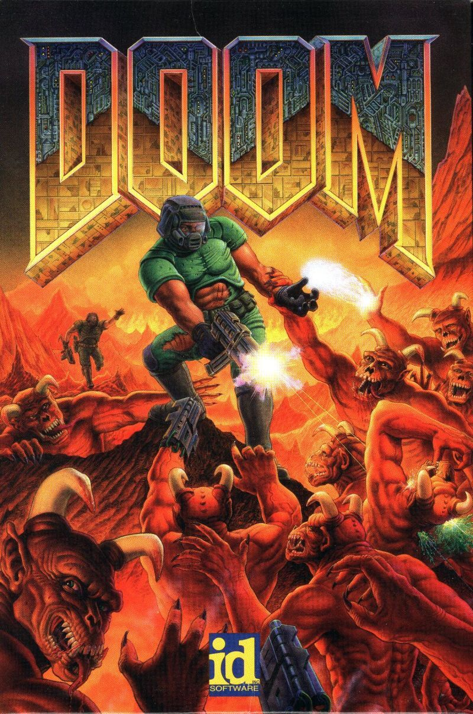

DOOM
Riassunto
Doom(ufficialmente scritto come DOOM e occasionalmente DooM dai fan) è il primo videogioco rilasciato della serie di Doom,viene considerato uno dei giochi che hanno consilidato il genere FPS (First Person Shooter). Con una trama stile horror fantascientifica, il giocatore riveste il ruolo di un marineche si ritrova immerso in una invasione, operata da creature infernali. Il gioco ha introdotto le modalità: cooperativa e deathmatch(battaglia a squadre) dandogli il senso che conosciamo ad oggi e incentivando modifiche al gioco stesso da parte dei fan. Inizialmente è stato rilasciato nel Dicembre del 1993, quando una copia condivisa è stata caricata in un server FTP'università del Wisconsin. La versione ultimata di Doom, ovvero un aggiornamento di quella originale che comprendeva un quarto episodio, fu rilasciata nel 1995 e venduta al dettaglio.
In Doom, il giocatore veste i panni di un marine spaziale senza nome, chiamato anche Doomguy dalla community prima di essere rinominato "Doom Slayer", che dovrà affrontare orde di invasori venuti dall'inferno. Il gioco è composto da nove livelli, distribuiti in modalità shareware, si stima che Doom sia stato giocato da 15-20 milioni di pesone nei due anni seguenti al suo rilascio, rendendo popolare la modalità di gioco, creando un vero e proprio fenomeno di sottocultura videoludica. Doom è stato il pioniere nell'utilizzo di una immersiva interfaccia grafica 3D, ha implementato la modalità multiplayer e supportato gli utenti che potevano avere una propria versione "custom" del gioco, in quanto ogni giocatore poteva aggiungere codice, organizzandolo in archivi di file conosciuti come "WADs". Negli anni 90' infatti, ogni gioco FPS, veniva ricondotto immediatamente al genere Doom, divenuto poi "Doom clone" con accezione dispregiativa. Le sue grafiche e meccaniche violente, associate ad un immaginario quasi satanico, hanno reso Doom il soggetto di alcune considerabili controversie legali.
Il franchise di Doom ha continuato ad esistere negli anni, grazie al rilascio di Doom II: Hell on Earth (1994) con numerose espansioni, includendo Master Levels for Doom II, e Final Doom (1996).
Originariamente il gioco è stato sviluppato in DOS, i giochi della serie, negli anni hanno poi subito operazioni di "porting" verso altre piattaforme. Una volta che il codice sorgente è stato reso pubblico nel 1997, sono comparse numerose versioni, poichè i fan hanno cominciato a trasportare il codice su un numero illimitato di dispositivi. La serie ha iniziato a perdere interesse, nel momento in cui la tecnologia del motore grafico di Doom ha iniziato ad essere ritenuta obsoleta a partire dalla seconda metà degli anni 90', anche se i fan hanno continuato a produrre archivi di codice (WADs), speedruns (sfide per finire il gioco nel minor tempo possibile), e modifiche al codice sorgente originale.
La serie attirò nuovamente l'attenzione della community videoludica nel 2004, con il rilascio di Doom 3, un videogioco horror con un'interfaccia grafica che simula una moderna telecamera detta id Tech 4.
Nel 2016 poi, è stato sviluppato un reboot della saga, semplicemente denominato Doom, che consiste in un riadattamento (non proprio fedelissimo) dei due giochi originali, con un comparto grafico interamente sviluppato ad hoc, tale adattamento è stato pubblicato dalla software House Bethesda.
Nel 2019 poi, è uscito nelle sale cinematografiche Doom: Annihilation, un film che riprende le tematiche dell'universo del videogioco.
A Marzo 2020, è stato rilasciato Doom Eternal, un ulteriore capitolo del videogioco considerato il sequel di Doom (2016).

Storia e sviluppo
Lo sviluppo di Doom è cominciato nel 1992, quando John Carmack ha cominciato a scrivere
il codice del motore grafico mentre il resto della casa id Software stava finendo il gioco Spear of Destiny
(il prequel di Wolfenstein 3D).
Quando è cominciata la vera fase di design, la tematica principale era largamente influenzata da alcune pellicole cinematografiche quali:
Aliens and Evil DeadII, e dalla campagna pubblicitaria del nuovo gioco di ruolo Dungeons and Dragons
dove le forze dell'inferno invadevano il mondo umano.
Il titolo del gioco è stato scelto da John Carmack in persona.
C'è una scena nel film "The Color of Money" dove Tom Cruise
si presenta nell'atrio di una piscina con una stecca da biliardo personalizzata in una valigia.
"What do you have in there?" asks someone. "Doom." risponde Cruise con un sorriso impertinente.
Questo e la seguente carneficina, indicano come era visto Doom dall'opinione pubblica.
I programmatori Id's hanno dovuto utilizzare diversi stratagemmi per implementare in maniera efficiente sui computer dell'epoca tutte le caratteristiche Software/Hardware.
In particolare, i livelli di Doom non sono propriamente rappresentati in 3 dimensioni, in realtà la macchina li vede come piani in due dimensioni dove separatamente sono implementate le differenze di altezza dei vari oggetti che compongono l'ambiente di gioco,
un trucco simile viene utilizzato nei videogiochi attuali, per rappresentare grandi ambienti esterni.
Doom ha anche una modalità detta low detail per permettere anche alle macchine più vecchie di far girare il gioco ad un frame rate accessibile, come quelle che usano un procesore 80386.
Il Designer Tom Hall ha scritto un elaborato documento di specifiche detto anche The Doom Bible
secondo cui il gioco avrebbe dovuto prevedere una trama dettagliata, la possibilità di scegliere il personaggio tra un set più ampio, e un numero di caratteristiche interattive,
purtroppo alcune di queste scelte implementative vennero poi scartate a favore di un design di gioco più intuitivo, portanto al licenziamento volontario di Tom Hall.
La maggior parte delle strutture dei livelli finali sono di John Romero e Sandy Petersen, la grafica è stata curata da Adrian Carmack, Kevin Cloud e Gregor Punchatz, essa è stata creata usando diversi metodi,
sebbene la maggior parte sia stata disegnata o dipinta, diversi mostri sono stati creati digitalizzando una serie di statue di argilla, persino alcune armi sono state disegnate basandosi su alcune armi giocattolo.
Una colonna sonora dal genere Heavy Metal è stata fornita da Bobby Prince.
La caratteristica distintiva di Doom al tempo del suo rilascio era la grafica 3D, imparagonabile rispetto ad altri giochi elaborati in tempo reale con Hardware di livello medio, diverse caratteristiche del comparto grafico sono riprese da Wolfenstein3D.
Tali differenze rispetto ai giochi dell'epoca sono:
- Differenza di altitudine (tutti i pavimenti/soffitti in Wolfenstein3D hanno la stessa altezza), ma non sono presenti superfici inclinate.
- Presenza di mura non ortogonali(tutte le pareti di Wolfenstein3D sono poste in una griglia rettangolare).
- Mappa di tuttte le superfici esplorabili.
- Livelli di luce differenti in base alle diverse aree di uno stesso livello, questo aiuta non solo a rendere ogni livello unico, ma permette di usare le tenebre per impaurire il giocatore stesso.
- Un architettura meno statica rispetto a Wolfenstein3D: qui le piattaforme possono muoversi in alto e in basso, i piani possono essere scalati grazie all'uso di scale, ponti che possono far salire o scendere il giocatore.
- Una diffusione audio stereo che permette una netta distinzione della distanza e direzione di provenienza di un determinato suono, il giocatore è messo in guardia dal grugnito dei mostri e riceve indizi occasioni sulla posizione di oggetti segreti sentento l'apertura di porte nascoste da remoto.
Trama
Doom ha una trama semplice è scritta nel manuale d'istruzioni, ed avanza nel corso del gioco principalmente atttraverso messaggi mostrati tra un livello e l'altro.
Il giocatore prende le parti di un marine, "uno dei più tosti del pianeta Terra, addestrato per l'azione" che è stato incarcerato su Marte dopo aver assaltato un ufficiale che aveva impartito l'ordine di fare fuoco su alcuni civili.
In questo luogo, il nostro marine lavora per la Union Aerospace Corporation (UAC),
un conglomerato multiplanetario militare, che effettua esperimenti segreti sui viaggi interdimensionali.
Di recente il teletrasporto da loro inventato, ha mostrato segni di anomalie e instabilità, ma le ricerche continano senza sosta, quando all'improvviso qualcosa va storto e alcune creature infernali, spuntano dai teletrasporti nei pianeti Phobos and Deimos.
Dalla base interessata parte subito un'azione difensiva, volta a bloccare l'invasione sul nascere, ma la base verrà presto conquistata dai mostri, tutto il personale rimasto ucciso viene traformato in zombie.
Un distaccamento militare da Marte parte verso Phobos per indagare sull'incidente.
Il giocatore ha la missione di rendere sicuro il perimetro, affinchè la squadra d'assalto possa trasportare le armi pesanti all'interno.
La connessione radio cede molto presto, così il giocatore si rende conto di essere l'unico sopravvissuto.
Essendo impossibilitato a pilotare l'astronave per il ritorno, poichè irreversibilmente danneggiata, l'unica via di fuga è combattere attraverso i vari complessi della base lunare.
Gameplay
Doom è uno sparatutto in prima persona, con un'impostazione di sfondo che mescola fantascienza e horror (nello stile weird menace);
il gioco viene presentato nella forma di tre episodi, ognuno si svolge in un luogo generico e viene giocato separatamente.
L'obiettivo primario di ognu livello è semplice: localizzare l'uscita che conduce alla prossima area di gioco, (contrassegnata da una scritta EXIT rossa),
ovviamente sopravvivendo a tutti i pericoli che incontreremo nel nostro percorso. Tra gli ostacoli troveremo mostri, barili di rifiuti radioattivi, soffitti che scendono per schiacciare il giocatore
e porte bloccate per le quali avremo bisogno di una chiave, o di attivare uno switch che dovrà essere localizzato.
I livelli solitamente sono labirintici (la minimappa è un aiuto cruciale per poterli navigare), oltretutto, in ogni livello sono presenti stanze segrete in abbondanza che contengono powerups
come un premio per chi esplora completamente il livello in questione. Una schermata di conteggio alla fine di ogni livello, (trane per l'ultimo livello di ogni episodio che descrive parte della trama)
aiuta il giocatore per collezionare tutti gli obiettivi secondari, per esempio mostrando la percentuale di creature uccise nel livello, o il numero di segreti svelati.